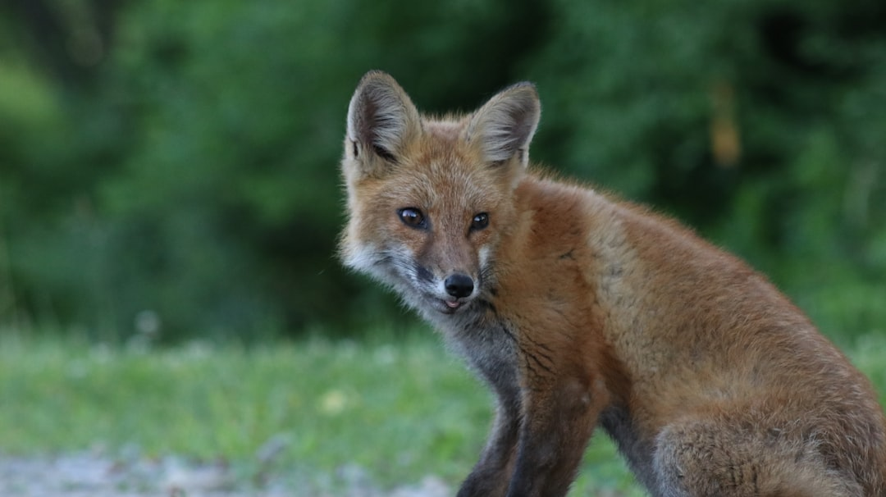
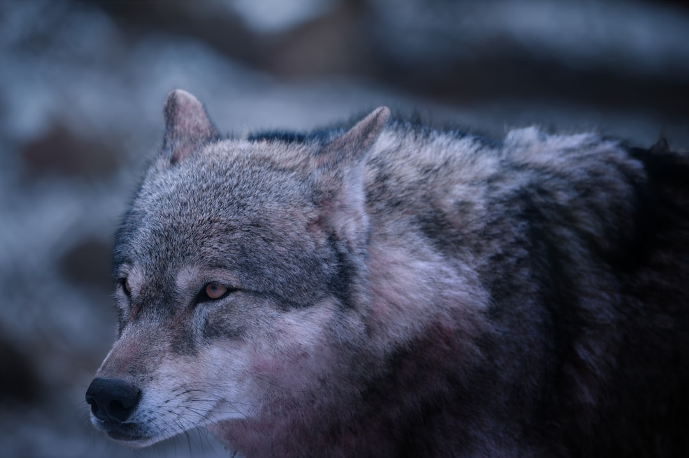
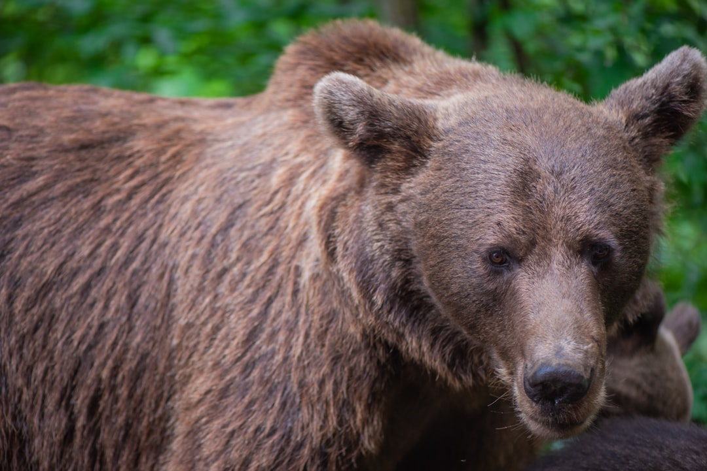
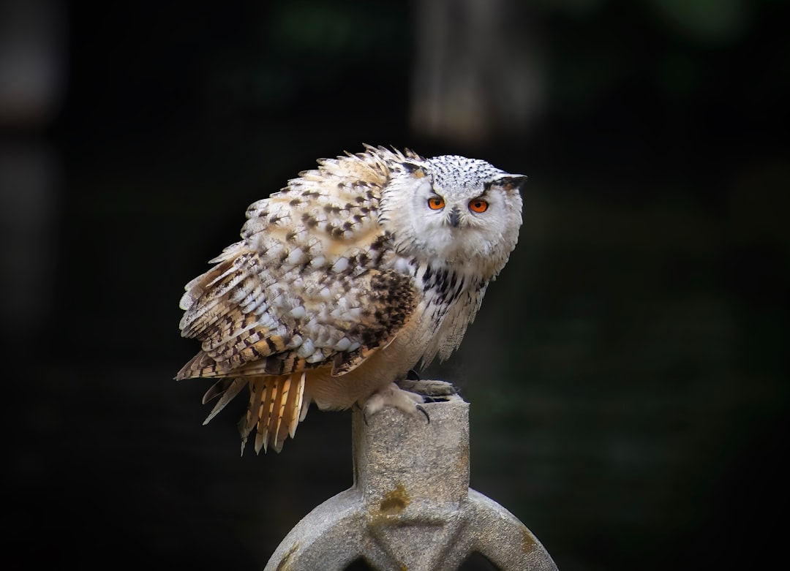
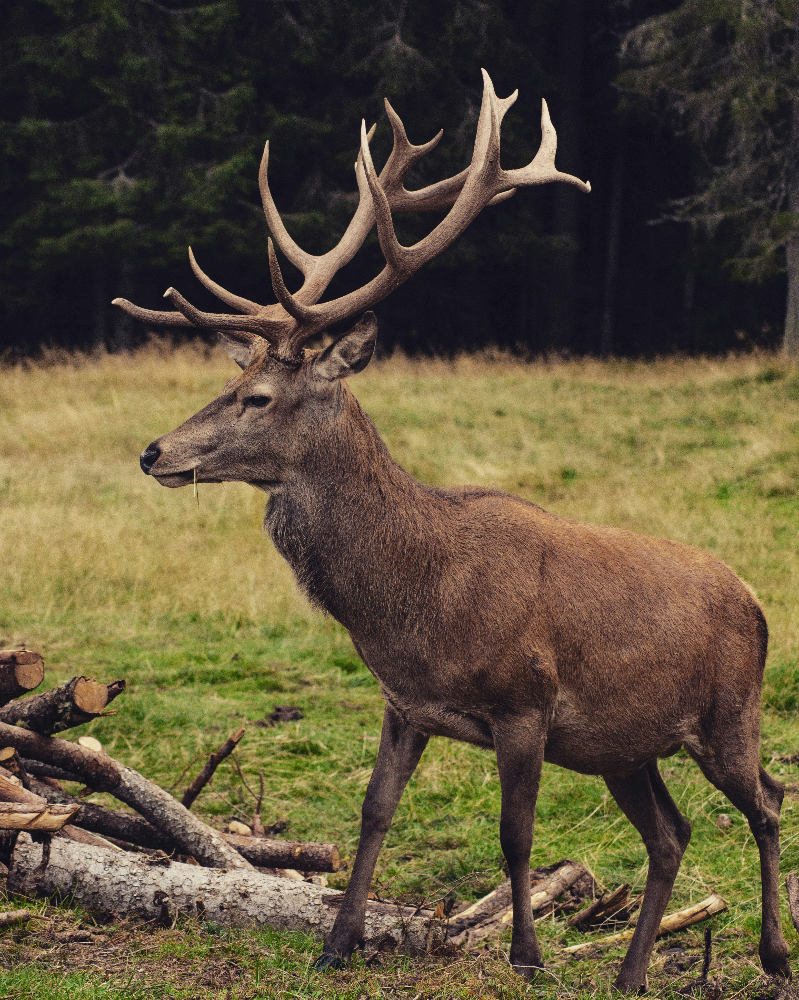
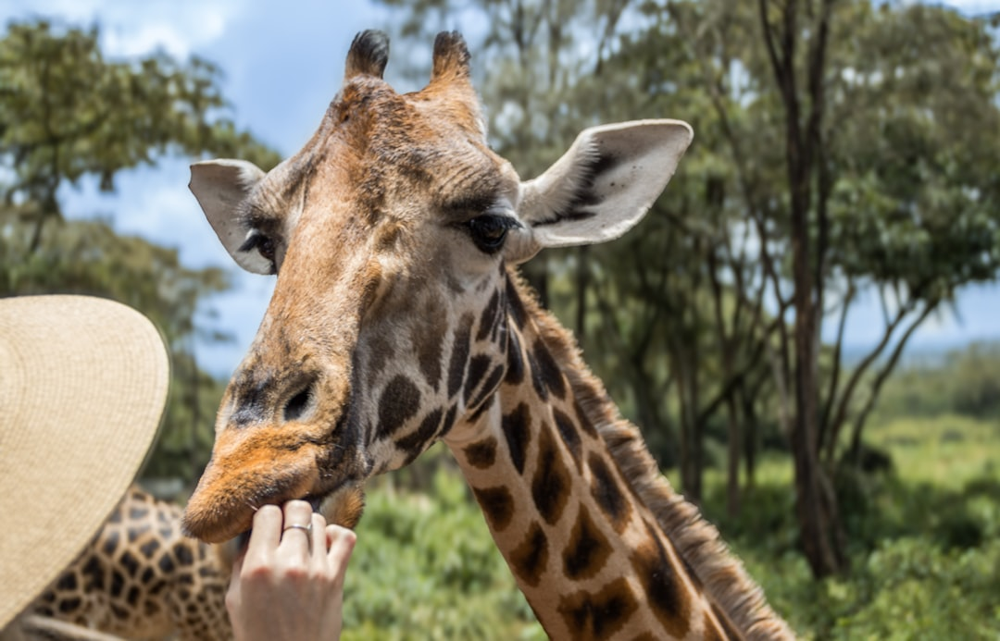

Animais Fantásticos
Uma jornada pela natureza selvagem através dos olhos dos mais fascinantes habitantes do reino animal. Descubra histórias, comportamentos e a beleza intrínseca das criaturas que compartilham nosso planeta.
8.7M
Espécies Estimadas
41%
Ameaçadas de Extinção
150
Espécies Perdidas/Dia
500K
Insetos Catalogados

Raposa
Vulpes Vulpes
A raposa vermelha é um dos carnívoros mais adaptáveis do mundo, capaz de prosperar em ambientes que vão desde florestas densas até áreas urbanas. Com sua pelagem característica em tons de vermelho-alaranjado e cauda espessa, este animal noturno desenvolveu uma notável inteligência e astúcia para sobreviver em diversos habitats.
Habitat
Florestas temperadas, campos abertos, montanhas e áreas suburbanas em todo o hemisfério norte.
Comportamento
Solitária e predominantemente noturna, a raposa é conhecida por sua capacidade de caça precisa, utilizando sua audição aguçada para localizar pequenos roedores mesmo sob a neve.

Lobo
Canis lupus
O lobo cinzento é um predador social altamente inteligente, vivendo em matilhas complexas com estruturas hierárquicas definidas. Seu uivo característico serve como comunicação de longa distância, reforçando laços sociais e demarcando território. Como predador de topo, desempenha um papel crucial no equilíbrio dos ecossistemas.
Habitat
Florestas boreais, tundra ártica, pradarias e regiões montanhosas da América do Norte, Europa e Ásia.
Comportamento
Animal altamente social que vive em matilhas familiares. Exibe comportamentos cooperativos complexos durante a caça, cuidado parental e defesa territorial.

Onça
Panthera onca
A onça-pintada é o maior felino das Américas e o terceiro maior do mundo. Com sua pelagem dourada marcada por rosetas pretas distintas, este predador solitário possui a mordida mais poderosa entre todos os felinos. Excelente nadadora, a onça tem uma conexão profunda com ambientes aquáticos, caçando até mesmo jacarés.
Habitat
Florestas tropicais úmidas, savanas, pântanos e áreas ribeirinhas da América Central e do Sul, especialmente na Amazônia e no Pantanal.
Comportamento
Caçador solitário e territorial com hábitos predominantemente noturnos. Conhecida por sua técnica única de caça: perfurar o crânio da presa com suas mandíbulas poderosas.

Urso
Ursus arctos
O urso-pardo é uma das espécies mais icônicas da megafauna do hemisfério norte. Com sua imponente estrutura corporal e pelagem variando entre tons de marrom claro e escuro, este omnívoro inteligente demonstra notável adaptabilidade alimentar. Apesar de sua aparência robusta, os ursos-pardos são surpreendentemente ágeis e podem correr a velocidades de até 55 km/h.
Habitat
Florestas temperadas e boreais, tundra alpina e costeira, desde a América do Norte até a Europa e Ásia.
Comportamento
Predominantemente solitário, exceto durante a época de acasalamento. Hiberna durante o inverno em regiões mais frias. Alimenta-se de uma dieta variada que inclui peixes, pequenos mamíferos, raízes e bagas.
“A grandeza de uma nação pode ser julgada pelo modo como seus animais são tratados.”— Mahatma Gandhi
Fatos Fascinantes
Descubra capacidades extraordinárias e comportamentos surpreendentes do reino animal que desafiam nossa compreensão.
Inteligência Animal
Corvos podem reconhecer rostos humanos e guardar rancor por anos. Golfinhos se chamam por "nomes" únicos e elefantes demonstram empatia e luto.
Adaptações Extremas
O urso d'água pode sobreviver no vácuo do espaço, a temperaturas próximas do zero absoluto e suportar radiação mil vezes maior que outros animais.
Comunicação Complexa
Baleias jubarte criam "canções" complexas que podem durar até 20 minutos e viajar por centenas de quilômetros através dos oceanos.
Navegação Incrível
Borboletas-monarca migram mais de 4.000 km anualmente usando o campo magnético da Terra e a posição do sol como bússola natural.
Cooperação Social
Morcegos-vampiros compartilham sangue com companheiros famintos. Essa reciprocidade demonstra comportamento altruísta similar ao humano.
Longevidade Surpreendente
A água-viva Turritopsis dohrnii é biologicamente imortal, podendo reverter seu ciclo de vida. Tartarugas podem viver mais de 200 anos.
Momentos Capturados



Um Planeta, Milhões de Histórias

O Futuro Está em Nossas Mãos
A conservação da vida selvagem não é apenas sobre salvar animais — é sobre preservar os ecossistemas complexos que sustentam toda a vida na Terra, incluindo a nossa.
Cada espécie desempenha um papel único no equilíbrio da natureza. Quando perdemos uma espécie, perdemos não apenas um animal, mas toda uma rede de interações ecológicas que levaram milhões de anos para evoluir.
- Proteger habitats naturais e criar corredores ecológicos
- Combater o tráfico ilegal de animais selvagens
- Educar comunidades sobre a importância da biodiversidade
Reconectando Humanos e Natureza
Quem Somos
Animais Fantásticos é uma enciclopédia digital dedicada a documentar e celebrar a extraordinária diversidade da vida selvagem em nosso planeta. Inspirados pelas grandes obras naturalistas do século XIX e XX, buscamos combinar rigor científico com narrativas envolventes.
Nossa equipe é composta por biólogos, fotógrafos de natureza, escritores e conservacionistas apaixonados por compartilhar o fascínio do mundo animal.
Nossa Visão
Acreditamos que o conhecimento é a chave para a conservação. Quanto mais as pessoas aprendem sobre os animais e seus habitats, mais elas se importam em protegê-los.
Através de histórias cuidadosamente pesquisadas e imagens impressionantes, queremos inspirar uma nova geração de defensores da natureza e promover uma relação mais harmoniosa entre humanos e o mundo selvagem.
"Estudar a natureza é estar em comunhão com o espírito criativo que permeia o universo. Cada criatura, por menor que seja, carrega em si um universo de maravilhas esperando para ser descoberto."